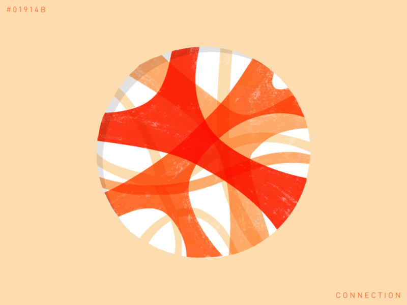
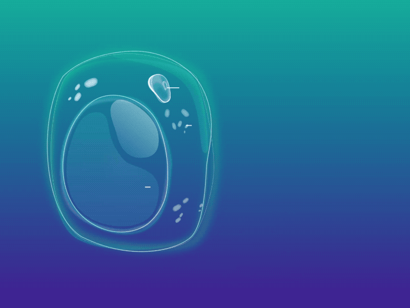

Kalbin Çalışmasına Etki Eden Faktörler

Sinirler
Omurilik soğanından çıkan sempatik sinirler kalbin çalışma hızını arttırıkken, parasempatik (vagus) sinirler kalbin çalışma hızını düşürür.

Hormonlar
Böbrek üstü bezinden salgılanan adrenalin ve tiroit bezinden salgılanan tiroksin hormonu ile kalbin çalışma hızı arttırılırken; vagus sinirinden salgılanan asetilkonin kalbin çalışma hızını düşürürür.

Vücut Isısı
Vücut sıcaklığının artması kalbin çalışma hızını arttırır.
CO2 Konsantrasyonu
Kanda CO2 arttıkça kalbin çalışma hızı artar.
Kimyasal Maddeler
Nikotin, kafein, uyuşturucu gibi uyarıcı maddeler alınması kalbin çalışma hızını arttırır.
Geri
İleri